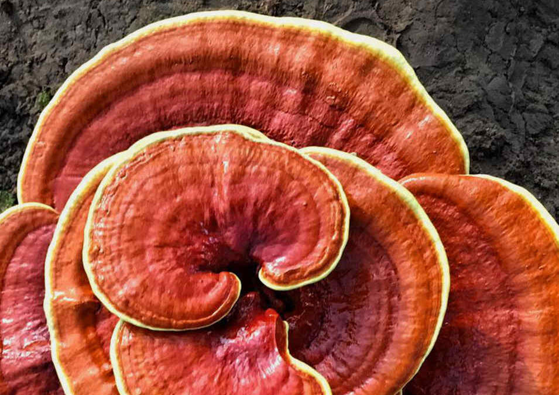

Nuestros Productos
Nootrópicos
Melena de león
La melena de león es el mejor aliado de nuestro cerebro. Con este hongo tendremos mayor capacidad de foco, mayor lucidez, menor niebla mental y cansancio. Es recomendable para personas de la tercera edad, ya que ayuda a prevenir o reducir los sintomas de Alzheimer, Parkinson y demencia.
Sistema inmune
Reishi
Comúnmente llamado el hongo de la inmortalidad, es símbolo de longevidad y felicidad. En la cultura oriental, es utilizado para aliviar el estrés, la fatiga y mejorar la calidad de sueño. También, hay estudios acerca de su repercusión en el sistema inmunitario e incluso en la desaceleración de varios tipos de cáncer.